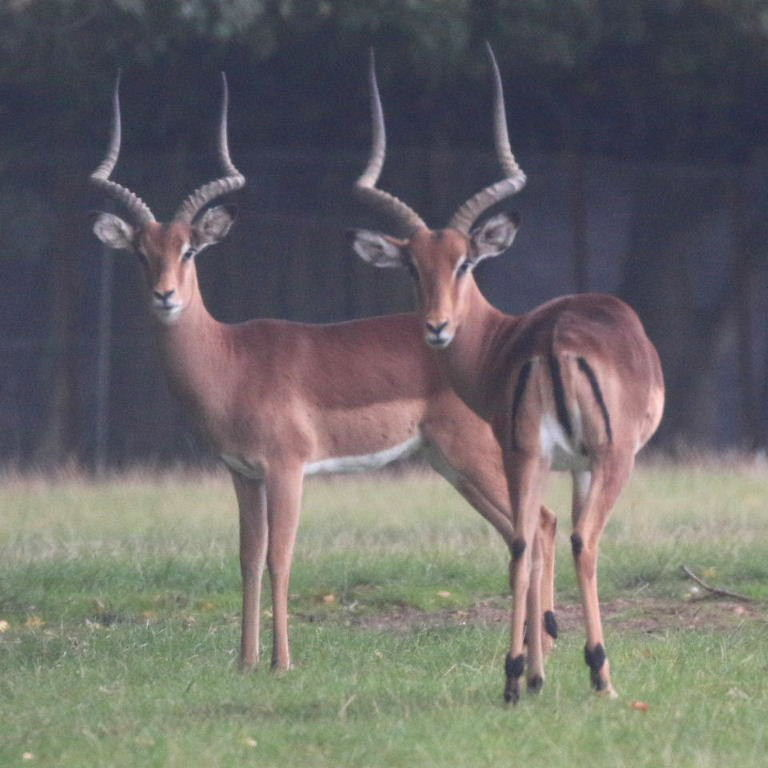
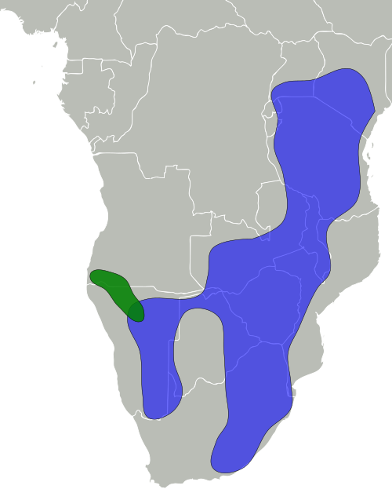
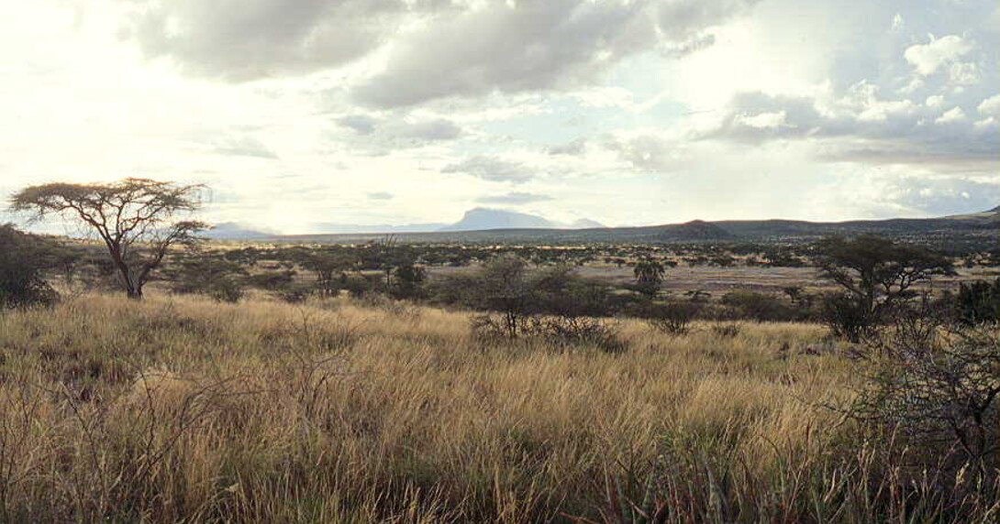

Physical Profile
Their size ranges from 70 centimeters to 92 centimeters in length, and it can be diferenciated from other species of impalas by its smaller size and lighter coloration[2].
Habitat and Geography
They are found in the savannas and woodlands of eastern and southern Africa[3].


Ecology and Behavior
- Diurnal and territorial especially solitary males [2]
- They are viviparous (live birth) and males will fight to court females durring the mating season.[2]
- They are preyed upon by africas large predators such as lions and leopards.[3]
- They mark their territory with urine and feces and are very vocal species especially during the mating season.[4]
- They are herbivorous and graze or browse vegetation depending on the conditions they also feed on fruits and acacia pods if available they also tend to live near water sources.[4]
Full Scientific Classification
| Taxonomic Rank | Scientific Name |
|---|---|
| Kingdom | Animalia |
| Phylum | Chordata |
| Class | Mammalia |
| Order | Artiodactyla |
| Family | Bovidae |
| Tribe | Aepycerotini |
| Genus | Aepyceros |
| Species | Aepyceros melampus |
| Subspecies | Aepyceros melampus melampus |